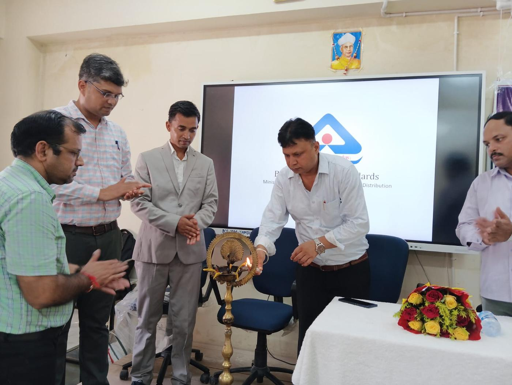

Home›Our Story
हमारी कहानी · Since 2006A movement born on a foundation day.
On 15 November 2006 — the day Jharkhand celebrates its own birth — a small group of visionaries gathered with a singular, resolute mission: to bridge the gap between policy and people.
Not just an NGO. A catalyst.
They named the movement Sarv Samarpit Sanstha — a title reflecting a philosophy of "Total Dedication" to the marginalized communities of Bihar and Jharkhand.
The organization was born of a hard-won realization: resources existed, but the last mile of development was blocked by a lack of awareness and technical skill. Starting in the rugged terrains of Jharkhand and the fertile plains of Bihar, SSS began its journey not just as an NGO, but as a catalyst for grassroots transformation.
True empowerment is not a gift. It is a built capacity.

Milestones stitched over two decades
A promise is made
SSS registers under the Societies Registration Act XXI of 1860 and begins work in the villages of Bihar and Jharkhand with a handful of volunteers and one conviction — dedication reaches where budgets alone cannot.
Swachhata becomes a way of life
Aligning with the Swachh Bharat Mission, SSS moves from constructing toilets to changing mindsets — organizing village drives for liquid and solid waste management, block by block.
Beneficiaries become breadwinners
Skill development programs equip youth and women with market-relevant trades. Self-Help Groups graduate from saving circles into micro-enterprises through financial literacy and entrepreneurial leadership.
Quality reaches the remotest village
In a unique initiative with the Bureau of Indian Standards, SSS orients Panchayati Raj members and everyday consumers on hallmarks, ISI marks and the BIS CARE app — so no household is left unprotected from sub-standard goods.
600+ villages and counting
From district training halls to school classrooms and factory floors, the footprint of SSS is seen in the rising confidence of the people it serves — a village headman checking an ISI mark on his phone, a woman leading a sanitation drive.
What we refuse to compromise on
Our vision: a self-reliant society where every individual — regardless of socio-economic standing — has access to clean resources, quality standards, and the skills to lead a life of dignity and purpose.
Total dedication
Our name is our standard. We stay until the skill stays — long after the event banner comes down.
Capacity, not charity
We don't solve a problem for a day. We hand communities the tools to solve their own problems for a lifetime.
Radical transparency
Every rupee is accounted for. Donors receive open reports on exactly how funds became field outcomes.
Quality for everyone
Standards shouldn't be a privilege of cities. Every remote hamlet deserves certified, safe goods.
Local leadership
Strong villages start with strong Panchayats. We invest in the leaders communities already trust.
Dignity first
We work with people, never for them. Respect for the communities we serve shapes every program.
The next chapter of this story could carry your name.
Join as a volunteer, a partner, or a donor — dedication is contagious.